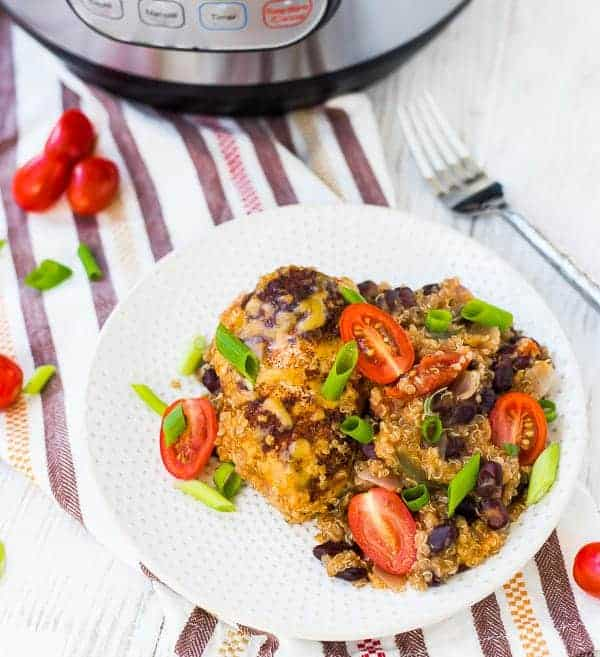

Southwestern Instant Pot Chicken and Quinoa

Description
A complete meal that’s made in one pot and is ready in 30 minutes, healthy, and full of flavor — this Instant Pot chicken is a weeknight lifesaver!
Ingredients
- 8 ounces(1 cup) chicken broth
- 1 can(15oz) black beans, drained and rinsed
- 1 can(14.5oz) diced tomatoes with their juice
- 1 bell pepper (any color) diced
- 1/2 red onion, diced
- 1-2 tablespoon taco seasoning
- 3/4 cup uncooked quinoa, rinsed
- 1 1/2 pounds boneless skinless chicken breast
- 1/2 cup shredded cheddar cheese
Steps
- In the bottom of your Instant Pot, stir together chicken broth, quinoa, beans, tomatoes, bell pepper, onion and one tablespoon of taco seasoning. Place chicken on top and sprinkle with remaining taco seasoning. Secure lid of Instant Pot and turn valve to seal.
- Set Instant Pot for manual (or poultry) for 10 minutes.
- Turn valve to “vent” to quick release pressure. Chicken should be at 165 degrees Fahrenheit or above. When pressure is released, remove lid and sprinkle cheese on top. Place cover back on for 1 minute or until cheese is melted.
- Serve chicken immediately with quinoa mixture.